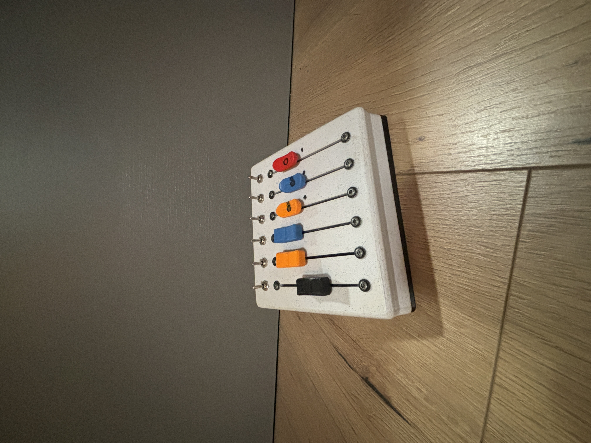

Introduction
In modern music production and live performance setups, precise control over audio levels is crucial.
A volume slider, integrated with Arduino and a MIDI chip, offers a versatile and programmable
solution for controlling audio volume. This report details the design, components, and
implementation of a volume slider using an Arduino microcontroller and a MIDI (Musical Instrument
Digital Interface) chip.
Components and Tools
- Arduino Microcontroller: Arduino Uno or any compatible model
- MIDI Chip: MIDI Shield or a dedicated MIDI breakout board (e.g., SparkFun MIDI
Shield)
- Slider (Potentiometer): Linear potentiometer
- MIDI Cable: Connects the MIDI output from the Arduino to a MIDI device or MIDI
interface
- Additional Components: Resistors, capacitors, jumper wires, breadboard, and a
MIDI DIN connector
- Software: Arduino IDE, MIDI Library
Circuit Design
The circuit design involves connecting the linear potentiometer to the Arduino and interfacing the
MIDI chip for communication. Here’s a step-by-step guide:
- Connect the Potentiometer:
- VCC (5V): Connects to one end terminal of the potentiometer
- GND: Connects to the other end terminal
- Analog Input (A0): Connects to the wiper (middle terminal) of the
potentiometer
- MIDI Chip Connection:
- TX (Transmit): Connects to the Arduino’s digital pin (usually pin 1 or
2, depending on the library setup)
- GND: Common ground with Arduino
- VCC: Connects to 5V power supply
- MIDI DIN Connector:
- Pin 4: Connects to the MIDI chip’s TX pin
- Pin 2: Common ground
- Pin 5: Connected via a 220-ohm resistor to 5V
Programming the Arduino
The Arduino is programmed to read the potentiometer value and send corresponding MIDI volume control
messages.
Here is a link to my git
Implementation and Testing
Here are the steps for assembling and testing the volume slider:
- Assembly: Assemble the circuit on a breadboard or solder components onto a PCB
for a more permanent solution. Ensure all connections are secure and the potentiometer moves
smoothly.
- Testing: Connect the MIDI cable from the Arduino to a MIDI interface or
directly to a MIDI-compatible device. Upload the sketch to the Arduino. Move the slider and
observe the changes in volume on the connected MIDI device.
Applications and Extensions
This volume slider can be used in various applications:
- Live Performance: Real-time control over volume levels of different instruments
or audio tracks.
- Studio Production: Precise adjustments during mixing and mastering processes.
- Integration with DAWs: Use the volume slider as a MIDI controller within
digital audio workstations like Ableton Live, FL Studio, or Logic Pro.
Possible extensions include:
- Multiple Sliders: Incorporate multiple sliders for controlling various MIDI
parameters (e.g., pan, expression).
- Wireless Communication: Use Bluetooth or Wi-Fi modules to create a wireless
MIDI controller.
- Visual Feedback: Add LEDs or an LCD screen to display current volume levels.
Conclusion
Creating a volume slider using an Arduino and a MIDI chip is an effective way to gain precise control
over audio levels in various music production and performance contexts. The flexibility of Arduino
programming and the standardization of MIDI protocol make this project highly adaptable to different
applications. By following the outlined steps, you can build a functional and reliable volume
control device.
